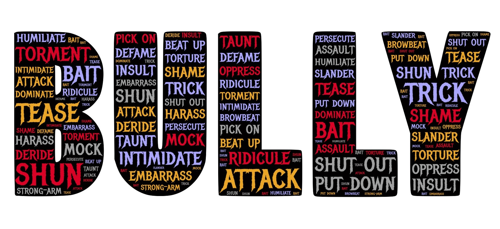

Do It! iMovie: PSA - No Bullies Here!
 The Challenge
The Challenge
Your challenge is to create an anti-bullying public service announcement (PSA). In this project, you will use information about bullying to create a video. You will edit the video using iMovie. You will use multiplication and fractions to support your PSA.
Getting Started
- Ensure your location is available to film.
- Gather your props and equipment.
- Review the “What You Should Know” section again to take notes (if desired).
- To start a new project in iMovie you need to click the + sign to add your videos.
Project Steps
-
Pre-Production
-
Production
-
Post-Production
Pre-Production
Select each item to learn more.
Research Your Topic
Research the topic of bullying. Begin with these two websites.
Find Credible Information
Find two credible websites of your own. You can use these questions to help with your search.
- Where does bullying happen the most?
- Are adults bullied?
- How long does it take to create a no-bullying campaign?
Use Scaling and Fractions to Provide Evidence
Use scaling and fractions to provide further evidence for your research. Be sure to simplify your fractions, mixed numbers, or whole numbers when necessary.
See the What You Should Know section for examples of scaling, fractions, and how to solve them.
You can also use one of these templates to help you.
| ___ out of ___ students are bullied at school. How many out of 100 may be bullied? |
| I spent ___ hours working on my PSA about bullying and 3 ½ (or a different mixed number) times that amount the next week. Altogether, I spent ___ time working on my PSA. |
| There are ____ students in my school. If ____ out of ____ students is/are bullied, that means possibly ____ students in my school are bullied in each class. |
Prepare for Filming
Prepare for filming.
- Write a script.
- Find a location for filming.
- Choose your actor(s).
- Gather and set up equipment and props.
Production

It’s time to record your PSA.
- Ensure the camera is steady and focused.
- Check your lighting.
- Check your camera shot.
- Check your sound.
- Begin filming using the video function on the iPad or within the iMovie app.
- Repeat these steps if you change locations or stop recording.
- Take a few photos to include in your PSA.
Post-Production

It’s time to put together your PSA! Start by opening the iMovie app and clicking the + sign to add your videos and photos to the iMovie editing app. Put the videos and photos in the order you want them.
Select each item to learn more.
Add Music or Sound Effects
Note: If you need a reminder of which steps to follow, see the Add Music or Sound Effects section on the Information About iMovie page.
As you select your music or sound effects think about these questions:
- How do you want your audience to feel throughout the video? What sound would make you feel that way?
- How long of a sound clip do you need?
Add the Ken Burns Effect to the Photos
Note: If you need a reminder of which steps to follow, see the Adding Ken Burns Effects section on the Information About iMovie page.
As you add the Ken Burns effect think about these questions:
- What position do you want the photo focused on when it enters the screen?
- What position do you want the photo to be in when it transitions to the next?
- Do you want to use this effect on all of the photos?
Add a Theme
Note: If you need a reminder of which steps to follow, see the Adding a Theme section in the Information About iMovie page.
As you add the theme, think about these questions:
- What do you want your audience to notice when they see the title page?
- Which theme would be best for the main idea of your video?
Change the Title
Change the title of your video and add text within your video if you would like to do so.
As you think about what your title or text should be think about these questions:
- What is the main idea of your video? What text would make this more important to others?
- What title will catch your audience’s attention?
Save Your Work
Be sure to save your video to the iPad and transfer to your own device.
- Click on save video (it will save on the iPad).
- Save it to your device.
- If you have a Mac, airdrop the video to your computer.
- If you have a PC, connect the cable, locate the iPad in File Explorer, and drag the iMovie where you would like to save it.